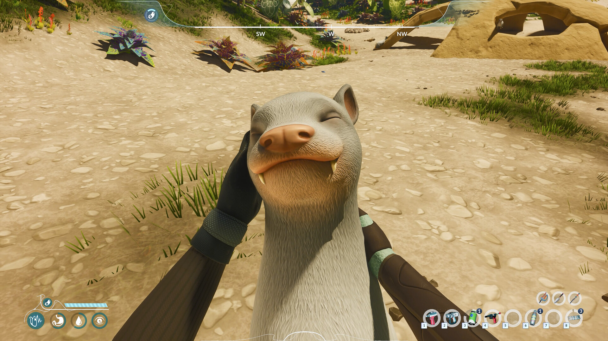
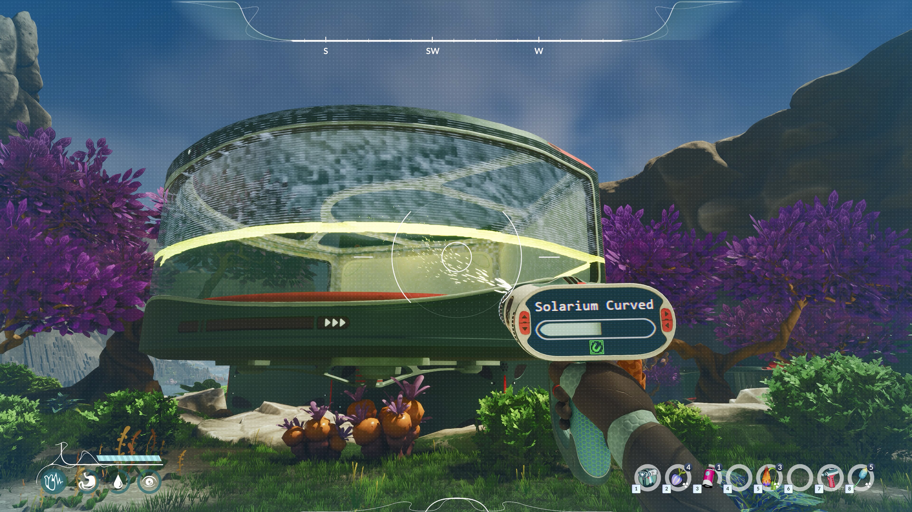
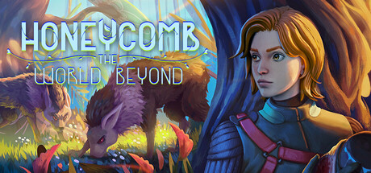

Releasing September 8, 2026
Honeycomb The World Beyond Wiki
Complete survival guide for Planet Sota7 — crossbreeding, biomes, species, and base building.
↓ Explore Wiki
Complete survival guide for Planet Sota7 — crossbreeding, biomes, species, and base building.
You play as Hennessy, a bioengineer sent by EON Corp to the alien planet Sota7. Your mission: discover exotic lifeforms, conduct crossbreeding experiments, and build a base of operations. The central mechanic is bioengineering — using Grafting and Allogamy to combine plant and animal DNA into entirely new hybrid species that help you survive and uncover the planet's secrets.
First 60 minutes on Sota7: managing hunger, thirst, and health while establishing your base in the Amber Plains.
Read Guide →Complete walkthrough of Grafting and Allogamy mechanics. How to build your Laboratory, combine species, and analyze hybrid traits.
Read Guide →Amber Plains, Crystal Caverns, Tide Pools, and more. Each biome's unique species, hazards, and resources explained.
Explore Biomes →Catalog of alien flora and fauna with trait profiles, threat levels, habitat, and crossbreeding compatibility notes.
Browse Species →Module priority guide: Lab, Greenhouse, Storage, Shelter. Planning mode tips and defensive structure placement.
Build Guide →Everything you can do in the free 1-hour Steam demo. Objectives, collectibles, and what skills carry over to the full game.
See Walkthrough →Official gameplay screenshots from Frozen Way






Crossbreeding uses two methods. Grafting physically combines two plant specimens in your lab to create a hybrid with merged traits. Allogamy is a genetic cross-pollination method for compatible species. You must build and operate a Laboratory module in your base to access either technique. The resulting hybrid inherits a combination of parent traits that can unlock new survival abilities.
The Amber Plains is the recommended starting zone. It features docile wildlife, an abundance of basic resources, and mild environmental hazards — making it ideal for building your first shelter, greenhouse, and lab module before venturing into more dangerous territories.
The bottom-left HUD tracks four core stats: Health (wave icon), Hunger (stomach icon), Thirst (water drop icon), and Research Progress (scan/eye icon). Your Greenhouse handles food production; fresh water sources are abundant near river biomes.
Yes. The game releases simultaneously on PC (Steam), PlayStation 5, and Xbox Series X/S on September 8, 2026. Full controller support is included on all platforms.
Your starting toolkit includes a Bio-Scanner (for identifying species — triggers the "Scanning..." holographic overlay), secateurs for collecting plant samples, and a chisel for extracting mineral specimens. Early upgrades expand your collection range and unlock new analysis abilities.
Some Sota7 fauna are aggressive on approach — including underwater predators. Others, like the large herbivores seen at watering holes, are docile and can be interacted with (even petted). The game advises learning each species' behavioral triggers before collecting samples. Running is always a valid strategy.

by Frozen Way · Published by Snail Games USA
Explore. Experiment. Adapt. Alien planet Sota7 is waiting.
🎮 Free 1-hour demo available now on Steam